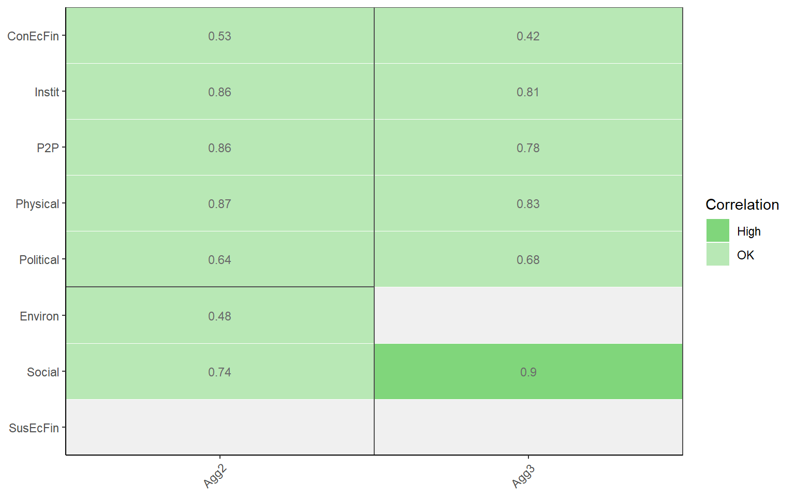

Chapter 19 Appendix: Analysing a Composite Indicator Example
Here some possible steps for analysing a composite indicator are given. The format for doing this might depend on what you are trying to accomplish. If you want to analyse your own composite indicator as you are building it, this should be integrated with the previous Appendix: Building a Composite Indicator Example. If you are analysing an existing composite indicator built by someone else, you may wish to do this in a separate R Markdown document, for example.
19.1 Loading data
If the analysis is part of constructing a composite indicator in COINr, you should have a COIN assembled following the steps in the previous chapter. However, if you are analysing an existing composite indicator, there may be a slight difference. It is possible, for example, that you may be provided with indicator data, which may already be normalised and aggregated.
COINr’s assemble() function allows you to assemble a COIN with pre-aggregated data. This is done by setting preagg = TRUE. If this is enabled, COINr will create a COIN with a data set called “PreAggregated.” To do this, you need a pre-aggregated data set which includes (possibly normalised) columns for all indicators and for all aggregates.
To demonstrate, we can use a pre-aggregated data set created by COINr.
library(COINr)
# build ASEM index
ASEM <- build_ASEM()
# extract aggregated data set (as a data frame)
Aggregated_Data <- ASEM$Data$Aggregated
# assemble new COIN only including pre-aggregated data
ASEM_preagg <- assemble(IndData = Aggregated_Data,
IndMeta = ASEMIndMeta,
AggMeta = ASEMAggMeta,
preagg = TRUE)COINr will check that the column names in the indicator data correspond to the codes supplied in the IndMeta and AggMeta. This means that these two latter data frames still need to be supplied. However, from this point the COIN functions as any other, although consider that it cannot be regenerated (the methodology to arrive at the pre-aggregated data is unknown), and the only data set present is the “PreAggregated” data.
19.2 Check calculations
If you are using pre-aggregated data, you may wish to check the calculations to make sure that they are correct. If you additionally have raw data, and you know the methodology used to build the index, you can recreate this by rebuilding the index in COINr. If you only have normalised and aggregated data, you can still at least check the aggregation stage as follows. Assuming that the indicator columns in your pre-aggregated data are normalised, we can first manually create a normalised data set:
library(dplyr)
ASEM_preagg$Data$Normalised <- ASEM_preagg$Data$PreAggregated %>%
select(!ASEM$Input$AggMeta$Code)Here we have just copied the pre-aggregated data, but removed any aggregation columns.
Next, we can aggregate these columns using COINr.
ASEM_preagg <- aggregate(ASEM_preagg, dset = "Normalised", agtype = "arith_mean")
# check data set names
names(ASEM_preagg$Data)
## [1] "PreAggregated" "Normalised" "Aggregated"Finally, we can check to see whether these data frames are the same. There are many possible ways of doing this, but a simple way is to use dplyr’s all_equal() function.
all_equal(ASEM_preagg$Data$PreAggregated,
ASEM_preagg$Data$Aggregated)
## [1] TRUEAs expected, here the results are the same. If the results are not the same, all_equal() will give some information about the differences. If you reconstruct the index from raw data, and you find differences, a few points are worth considering:
- The difference could be due to an error in the pre-aggregated data, or even a bug in COINr. If you suspect the latter please open an issue on the repo.
- If you have used data treatment or imputation, differences can easily arise. One reason is that some things are possible to calculate in different ways. COINr uses certain choices, but other choices are also valid. Examples of this include:
- Skew and kurtosis (underlying data treatment) - see e.g.
?e1071::skewness - Correlation and treatment of missing values - see
?cor - Ranks and how to handle ties - see
?rank
- Skew and kurtosis (underlying data treatment) - see e.g.
- Errors can also arise from how you entered the data. Worth re-checking all that as well.
Double-checking calculations is tedious but in the process you often learn a lot.
19.3 Indicator statistics
One next step is to check the indicator statistics. If you have the raw data, it is probably advisable to do this both on the raw data, and the normalised/aggregated data. Here, we will just do this on the aggregated data (but this works on any data set, e.g. also the “PreAggregated” and “Normalised” data sets created above):
ASEM <- getStats(ASEM, dset = "Aggregated")
## Number of collinear indicators = 5
## Number of signficant negative indicator correlations = 396
## Number of indicators with high denominator correlations = 0
# view stats table
# this is rounded first (to make it easier to view), then sent to reactable to make an interactive table
# you can also view this in R Studio or use any other table viewer to look at it.
ASEM$Analysis$Aggregated$StatTable %>%
roundDF() %>%
reactable::reactable()Particular things of interest here will be whether indicators or aggregates are highly skewed, the percentage of missing data for each indicator, the percentage of unique values and zeroes, the presence of correlations with denominators, and negative correlations. Recall that getStats() allows you to change thresholds for flagging outliers and high/low correlations.
Another output of getStats() is correlation matrices, which are also found in ASEM$Analysis$Aggregated. A good reason to include these here is that as part of the COIN, we can export all analysis to Excel, if needed (see the end of this chapter). However, for viewing correlations directly, COINr has dedicated functions - see the next section.
Before arriving at correlations, let’s also check data availability in more detail. The function of interest here is checkData().
ASEM <- checkData(ASEM, dset = "Raw")
# view missing data by group
ASEM$Analysis$Raw$MissDatByGroup %>%
roundDF %>%
reactable::reactable()This adds analysis tables to the ASEM$Analysis folder (analysis always appears under the respective “dset” name). We have applied the analysis to the raw data set because in later steps, the data is imputed. Here, the missing data is given by each aggregation group. This helps to flag, for instance, cases where there is very low data availability for a unit in a given aggregation group. We can check the minimum:
# get minimum, exclude first column (not numerical)
min(ASEM$Analysis$Raw$MissDatByGroup[-1])
## [1] 55.55556This shows that in the worst case, there is more than 50% data availability for each unit in each aggregation group.
19.4 Multivariate analysis
This section will overlap to some extent with the Multivariate analysis chapter. In any case we will summarise a few options here at the risk of repetition.
Perhaps the most useful way to view correlations for an aggregated index is to look at correlations of each indicator or aggregate with its parents. This is done quickly in COINr with the plotCorr() function.
plotCorr(ASEM, dset = "Aggregated", showvals = T, withparent = "family", flagcolours = TRUE)This shows at a glance where some problems may lie. In particular we learn that the TBT indicator is negatively correlated with all its parent groups. We can also see that the “Forest” indicator is insignificantly correlated with its parents. This table is generated here for indicators, but can also generated for other levels by setting the aglevs argument.
plotCorr(ASEM, dset = "Aggregated", showvals = T, withparent = "family", flagcolours = TRUE, aglevs = 2)
Recall also that this function can return data frames for your own processing or presentation, rather than figures, by changing the out2 argument.
You may also want to view correlations between indicators or within specific groups. The plotCorr() function is flexible in this respect.
# plot correlations within a specific pillar (Physical)
plotCorr(ASEM, dset = "Raw", icodes = "Physical", aglevs = 1, cortype = "spearman", pval = 0)You may wish to generate these correlation plots for each major aggregation group. If any specific correlations are of interest, we can generate (for example) a scatter plot. Technical barriers to trade (TBTs) are shown in particular to be negatively correlated with the overall index and all parent levels.
iplotIndDist2(ASEM, dsets = c("Raw", "Aggregated"), icodes = "TBTs", aglevs = c(1,4), ptype = "Scatter")Recall here that because we have plotted a “Raw” indicator against the index, and this is a negative indicator, its direction is flipped. Meaning that in this plot there is a positive correlation, but plotting the normalised indicator against the index would show a negative correlation.
Next we can check the internal consistency of the indicators using Cronbach’s alpha. Remember that this can be done for any group of indicators - e.g. we could do it for all indicators, or target specific groups or also check the consistency of aggregated values. Examples:
# all indicators
getCronbach(ASEM, dset = "Normalised")
## [1] 0.8985903
# indicators in connectivity sub-index
getCronbach(ASEM, dset = "Normalised", icodes = "Conn", aglev = 1)
## [1] 0.8805543
# indicators in sustainability sub-index
getCronbach(ASEM, dset = "Normalised", icodes = "Sust", aglev = 1)
## [1] 0.6794643
# pillars in connectivity sub-index
getCronbach(ASEM, dset = "Aggregated", icodes = "Conn", aglev = 2)
## [1] 0.7827171
# pillars in sustainability sub-index
getCronbach(ASEM, dset = "Aggregated", icodes = "Sust", aglev = 2)
## [1] -0.289811Note that it makes more sense to do correlation analysis on the normalised data, because indicators have had their directions reveresed where appropriate. But what’s going on with the consistency of the sustainability pillars? We can check:
plotCorr(ASEM, dset = "Aggregated", icodes = "Sust", aglevs = 2, pval = 0)
Sustainability dimensions are not well-correlated and are in fact slightly negatively correlated. This points to trade-offs between different aspects of sustainable development: as social sustainability increases, environmental sustainability often tends to decrease. Or at best, an increase in one does not really imply an increase in the others.
Finally for the multivariate analysis, we may wish to run a principle component analysis. As with Cronbach’s alpha, we can do this on any group or level of indicators, so there are many possibilities. In the Multivariate analysis chapter, this was done at the pillar level. We can also try here at the indicator level, let’s say within one of the pillar groups:
PCA_P2P <- getPCA(ASEM, dset = "Normalised", icodes = "P2P", aglev = 1, out2 = "list")
summary(PCA_P2P$PCAresults$P2P$PCAres)
## Importance of components:
## PC1 PC2 PC3 PC4 PC5 PC6 PC7
## Standard deviation 1.9896 1.0164 0.9477 0.9067 0.72952 0.59923 0.46175
## Proportion of Variance 0.4948 0.1291 0.1123 0.1028 0.06653 0.04488 0.02665
## Cumulative Proportion 0.4948 0.6239 0.7362 0.8390 0.90548 0.95037 0.97702
## PC8
## Standard deviation 0.42878
## Proportion of Variance 0.02298
## Cumulative Proportion 1.00000We can see that the first principle component explains about 50% of the variance of the indicators, which is perhaps borderline for the existence of single latent variable. That said, many composite indicators will not yield strong latent variables in many cases.
We can now produce a PCA biplot using this information.
# install ggbiplot if you don't have it
# library(devtools)
# install_github("vqv/ggbiplot")
library(ggbiplot)
ggbiplot(PCA_P2P$PCAresults$P2P$PCAres,
labels = ASEM$Data$Normalised$UnitCode,
groups = ASEM$Data$Normalised$Group_EurAsia)Once again we see a fairly clear divide between Asia and Europe in terms of P2P connectivity, with exceptions of Singapore which is very well-connected. We also note the small cluster of New Zealand and Australia which have very similar characteristics in P2P connectivity.
19.5 Weights
Another worthwhile check is to understand the effective weights of each indicator. A sometimes under-appreciated fact is that the weight of an indicator in the final index is due to its own weight, plus the weight of all its parents, as well as the number of indicators and aggregates in each group. For example, an equally-weighted group of two indicators will each have a higher weight (0.5) than an equally weighted group of ten indicators (0.1), and this applies to all aggregation levels.
The function effectiveWeight() gives effective weights for all levels. We can check the indicator level by filtering:
EffWts <- effectiveWeight(ASEM)
IndWts <- EffWts$EffectiveWeightsList %>%
filter(AgLevel == 1)
head(IndWts)
## AgLevel Code EffectiveWeight
## 1 1 Goods 0.02000000
## 2 1 Services 0.02000000
## 3 1 FDI 0.02000000
## 4 1 PRemit 0.02000000
## 5 1 ForPort 0.02000000
## 6 1 CostImpEx 0.01666667We might want to know the maximum and minimum effective weights and which indicators are involved:
IndWts %>%
filter(EffectiveWeight %in% c(min(IndWts$EffectiveWeight), max(IndWts$EffectiveWeight)))
## AgLevel Code EffectiveWeight
## 1 1 StMob 0.01250000
## 2 1 Research 0.01250000
## 3 1 Pat 0.01250000
## 4 1 CultServ 0.01250000
## 5 1 CultGood 0.01250000
## 6 1 Tourist 0.01250000
## 7 1 MigStock 0.01250000
## 8 1 Lang 0.01250000
## 9 1 LPI 0.01250000
## 10 1 Flights 0.01250000
## 11 1 Ship 0.01250000
## 12 1 Bord 0.01250000
## 13 1 Elec 0.01250000
## 14 1 Gas 0.01250000
## 15 1 ConSpeed 0.01250000
## 16 1 Cov4G 0.01250000
## 17 1 Embs 0.03333333
## 18 1 IGOs 0.03333333
## 19 1 UNVote 0.03333333
## 20 1 Renew 0.03333333
## 21 1 PrimEner 0.03333333
## 22 1 CO2 0.03333333
## 23 1 MatCon 0.03333333
## 24 1 Forest 0.03333333
## 25 1 PubDebt 0.03333333
## 26 1 PrivDebt 0.03333333
## 27 1 GDPGrow 0.03333333
## 28 1 RDExp 0.03333333
## 29 1 NEET 0.03333333An easy way to visualise is to call the plotFramework() function:
plotframework(ASEM)19.6 What-ifs
Due to the uncertainty in composite indicators, it may often be useful to know how the scores and ranks would change under an alternative formulation of the index. Examples could include different weights, as well as adding/removing/substituting indicators or entire aggregation groups.
To give an example, let’s imagine that some stakeholders claim that Political connectivity is not relevant to the overall concept. What would happen if it were removed? There are at least three ways we can check this:
- Use the “exclude” argument of
assemble()to exclude the relevant indicators - Set the weight of the Political pillar to zero
- Remove the indicators manually
Here we will take the quickest option, which is Option 2.
# Copy the COIN
ASEM_NoPolitical <- ASEM
# Copy the weights
ASEM_NoPolitical$Parameters$Weights$NoPolitical <- ASEM_NoPolitical$Parameters$Weights$Original
# Set Political weight to zero
ASEM_NoPolitical$Parameters$Weights$NoPolitical$Weight[
ASEM_NoPolitical$Parameters$Weights$NoPolitical$Code == "Political"] <- 0
# Alter methodology to use new weights
ASEM_NoPolitical$Method$aggregate$agweights <- "NoPolitical"
# Regenerate
ASEM_NoPolitical <- regen(ASEM_NoPolitical)
## -----------------
## Denominators detected - stored in .$Input$Denominators
## -----------------
## -----------------
## Indicator codes cross-checked and OK.
## -----------------
## Number of indicators = 49
## Number of units = 51
## Number of aggregation levels = 3 above indicator level.
## -----------------
## Aggregation level 1 with 8 aggregate groups: Physical, ConEcFin, Political, Instit, P2P, Environ, Social, SusEcFin
## Cross-check between metadata and framework = OK.
## Aggregation level 2 with 2 aggregate groups: Conn, Sust
## Cross-check between metadata and framework = OK.
## Aggregation level 3 with 1 aggregate groups: Index
## Cross-check between metadata and framework = OK.
## -----------------
## Missing data points detected = 65
## Missing data points imputed = 65, using method = indgroup_meanNow we need to compare the two alternative indexes:
compTable(ASEM, ASEM_NoPolitical, dset = "Aggregated", isel = "Index",
COINnames = c("Original", "NoPolitical"))
## UnitCode UnitName Rank: Original Rank: NoPolitical RankChange
## 14 EST Estonia 22 28 -6
## 6 BRN Brunei Darussalam 40 45 -5
## 44 ROU Romania 25 20 5
## 9 CYP Cyprus 29 33 -4
## 19 HRV Croatia 18 22 -4
## 50 THA Thailand 42 38 4
## 8 CHN China 49 46 3
## 16 FRA France 21 18 3
## 20 HUN Hungary 20 23 -3
## 21 IDN Indonesia 43 40 3
## 23 IRL Ireland 12 9 3
## 25 JPN Japan 34 31 3
## 31 LUX Luxembourg 8 11 -3
## 33 MLT Malta 10 13 -3
## 47 SVK Slovakia 24 21 3
## 11 DEU Germany 9 7 2
## 12 DNK Denmark 3 5 -2
## 24 ITA Italy 28 26 2
## 28 KOR Korea 31 29 2
## 36 MYS Malaysia 39 41 -2
## 38 NOR Norway 4 2 2
## 1 AUS Australia 35 36 -1
## 2 AUT Austria 7 8 -1
## 3 BEL Belgium 5 4 1
## 4 BGD Bangladesh 46 47 -1
## 15 FIN Finland 13 12 1
## 17 GBR United Kingdom 15 14 1
## 22 IND India 45 44 1
## 26 KAZ Kazakhstan 47 48 -1
## 29 LAO Lao PDR 48 49 -1
## 32 LVA Latvia 23 24 -1
## 34 MMR Myanmar 41 42 -1
## 35 MNG Mongolia 44 43 1
## 37 NLD Netherlands 2 3 -1
## 39 NZL New Zealand 33 34 -1
## 41 PHL Philippines 38 39 -1
## 42 POL Poland 26 25 1
## 46 SGP Singapore 14 15 -1
## 48 SVN Slovenia 11 10 1
## 51 VNM Vietnam 36 35 1
## 5 BGR Bulgaria 30 30 0
## 7 CHE Switzerland 1 1 0
## 10 CZE Czech Republic 17 17 0
## 13 ESP Spain 19 19 0
## 18 GRC Greece 32 32 0
## 27 KHM Cambodia 37 37 0
## 30 LTU Lithuania 16 16 0
## 40 PAK Pakistan 50 50 0
## 43 PRT Portugal 27 27 0
## 45 RUS Russian Federation 51 51 0
## 49 SWE Sweden 6 6 0
## AbsRankChange
## 14 6
## 6 5
## 44 5
## 9 4
## 19 4
## 50 4
## 8 3
## 16 3
## 20 3
## 21 3
## 23 3
## 25 3
## 31 3
## 33 3
## 47 3
## 11 2
## 12 2
## 24 2
## 28 2
## 36 2
## 38 2
## 1 1
## 2 1
## 3 1
## 4 1
## 15 1
## 17 1
## 22 1
## 26 1
## 29 1
## 32 1
## 34 1
## 35 1
## 37 1
## 39 1
## 41 1
## 42 1
## 46 1
## 48 1
## 51 1
## 5 0
## 7 0
## 10 0
## 13 0
## 18 0
## 27 0
## 30 0
## 40 0
## 43 0
## 45 0
## 49 0The results show that the rank changes are not major at the index level, with a maximum shift of six places for Estonia. The implication might be (depending on context) that the inclusion or not of the Political pillar does not have a drastic impact on the results, although one should bear in mind that the changes on lower aggregation levels are probably higher, and the indicators themselves may have value and add legitimacy to the framework. In other words, it is not always just the index that counts.
You can dig deeper investigating what-ifs with all kinds of adjustments. If you want to test the overall effect of uncertainties, rather than specific cases, an uncertainty and sensitivity analysis is very useful. This is explained in the Sensitivity analysis chapter and will not be repeated here.
19.7 Summing up
COINr offers all kinds of possibilities for analysis of a composite indicator, although to access most things you would need to assemble the indicator data into a COIN. As mentioned, I would recommend perfoming the analysis in an R Markdown document, then knitting the document to Word, pdf or HTML depending on the format that you need to present the work in. This can save a lot of time in exporting figures, and if changes are made to the index, you can easily rerun everything. Consider also that if your output is Word, you can use a formatting template to already pre-format the document.
To be completed